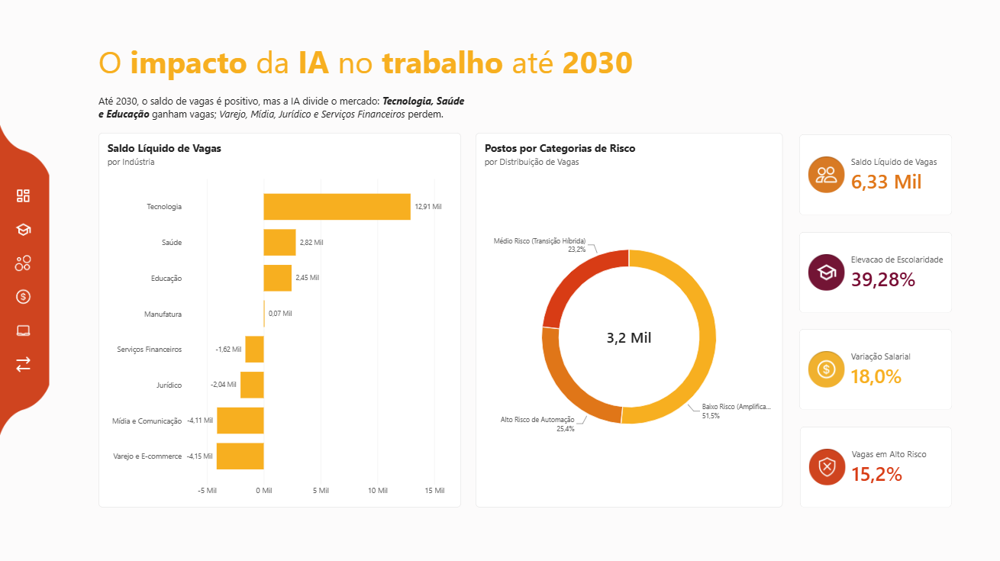

Impacto da IA no Trabalho 2030
A IA não está acabando com os empregos. Está dividindo o mercado.
Uma empresa de 35.000 colaboradores tem medo da IA e um orçamento de R$ 15 milhões para investir. Analisamos 3.755 salários reais e 3.200 postos de trabalho para mostrar quem ganha, quem perde e onde o dinheiro faz diferença.
O mercado não encolhe. Ele se divide.
Tecnologia e Saúde criam vagas e pagam mais. Varejo, Mídia e as rotinas de escritório perdem espaço para a automação.
Saldo Líquido de Vagas por Indústria
Variação absoluta projetada até 2030 (em milhares de postos)Polarização setorial: só Tecnologia (+12,91 mil), Saúde (+2,82 mil) e Educação (+2,45 mil) sustentam o saldo positivo, compensando o encolhimento de tarefas operacionais em Varejo, Mídia, Jurídico e Finanças.
Distribuição de Risco
Volume de postos monitoradosA amplificação predomina: 51,5% das ocupações estão na zona de Amplificação Humana, contra 25,4% em Alto Risco.
Machine Learning Engineer
+45,5%De $132.000 para $192.000 anuais, com foco em MLOps & LLM Orchestration.
Quartil de maior exposição
$169.220 • Vagas ↓5,1%Os salários mais altos do mercado, mas com risco agudo de retração nas vagas rotineiras.
Atendimento & Assistência Física
40,4%Baixa automação de tarefas manuais diretas e alta estabilidade de postos de trabalho.
Quem usa a IA ganha. Quem faz tarefa repetitiva perde.
A matriz cruza o risco de automação até 2030 com a variação dos salários. A IA não afeta todas as profissões igual: valoriza decisões complexas e pressiona funções operacionais repetitivas.
Amplificação
Risco < 30%Usam a IA como aliada para produtividade e conquistam os maiores aumentos.
Supervisão
Risco 40–60%O papel humano vira validação e auditoria dos sistemas autônomos.
Compressão
Risco > 70%Funções operacionais substituídas diretamente pela tecnologia.
Matriz de Disrupção Salarial
Eixo X: probabilidade de automação (%) • Eixo Y: variação salarial (%) • Bolha: headcount projetado 2030Os 5 que mais ganham. Os 5 que mais perdem.
Funções em que a IA multiplica a produtividade e exige orquestração técnica, pensamento crítico ou decisão estratégica.
| Posição / Cargo | Setor | Ganho salarial | Vagas 2030 |
|---|---|---|---|
| 1. Quantitative Portfolio Manager | Financial Services | +35,16% | +26,89% |
| 2. Machine Learning Engineer | Technology | +31,91% | +45,45% |
| 3. Biomedical Research Scientist | Healthcare | +29,63% | +32,84% |
| 4. Cybersecurity Threat Hunter (AI) | Technology | +29,29% | +43,75% |
| 5. Data Platform Engineer | Technology | +28,24% | +38,10% |
Funções com tarefas rotineiras, analíticas básicas ou operacionais: perdem salário real e vagas ao mesmo tempo.
| Posição / Cargo | Setor | Retração salarial | Vagas 2030 |
|---|---|---|---|
| 1. Bank Branch Teller | Financial Services | -16,28% | -53,49% |
| 2. Copywriter & Content Creator | Media & Comm. | -15,25% | -38,71% |
| 3. Medical Records Coder | Healthcare | -14,09% | -48,28% |
| 4. Paralegal Document Reviewer | Legal | -13,71% | -40,63% |
| 5. Data Entry Clerk | Financial Services | -13,33% | -54,55% |
DiagnósticoO topo do mercado captura até +35,16% de bônus salarial supervisionando sistemas multiagentes, enquanto funções repetitivas perdem mais de 50% dos seus postos.
Mais estudo exigido. Diploma ou microcredencial?
O que os dados dizem: setores muito regulados inflacionam diplomas, enquanto habilidades aplicadas (MLOps, Prompt Engineering) dão razão ao CDO.
Taxa de elevação de escolaridade por indústria
Linha tracejada: meta de 45%Polarização de titulação: Finanças (>70%), Jurídico e Educação exigem mais titulação para auditar a IA; Tecnologia (<20%) prioriza skills práticas.
Vagas por nível — 2030 vs Pré-IA
Participação de cada nível de escolaridade (100% empilhado)Salto na pós-graduação: Mestrado sobe de 9,66% para 25,91%; Ensino Médio cai de 50,06% para 37,41%.
Habilidades técnicas mais valorizadas
Vagas em 2030 por habilidade emergente (em milhares)Quatro fases para transformar risco em vantagem
Roadmap estratégico e alocação do orçamento corporativo de R$ 15 milhões.
A alocação estratégica do orçamento de R$ 15 milhões prepara a organização para a disrupção da IA, convertendo um risco de obsolescência em vantagem competitiva sustentável.
Em vez de pagar os altos custos de demissões em massa e recontratações, o plano estrutura a retenção e o desenvolvimento de capital humano em quatro fases integradas:
Diagnóstico & Mapeamento
R$ 1,5M 10% do orçamento • Meses 1-2 • Eficiência decisóriaCenso de competências com 35 mil colaboradores e segmentação de riscos no Power BI, eliminando investimentos redundantes.
Trilhas de curta duração
R$ 8,0M 53% do orçamento • 4 semanas a 4 meses • MitigaçãoBlindagem operacional (Grupo A) e aceleração de devs/analistas (Grupo B): Reskilling, Supervisão de IA e Liderança Ágil.
Trilhas de média/longa duração
R$ 4,5M 30% do orçamento • 6 a 14 meses • InovaçãoFormação interna de ponta: especializações robustas em MLOps, Cibersegurança, Gêmeos Digitais e Modelagem Avançada.
Governança, Talent & ROI
R$ 1,0M 7% do orçamento • Contínuo (Mês 3-18) • GovernançaInternal Talent Marketplace e governança contínua via Power BI para reduzir atrito e sustentar o longo prazo.
Próximos passos recomendados
Recomendamos a aprovação formal do cronograma orçamentário para começar já o Censo de Competências (Mês 1), garantindo que a empresa esteja pronta para liderar a transição tecnológica com sustentabilidade financeira e excelência operacional.
O que o dashboard revela?
Panorama executivo, disrupção de carreiras, elevação de escolaridade (Degree Escalation) e simulação de impacto orçamentário, modelados no Power BI.

Quem fez a pesquisa
Responsáveis pelo estudo empírico, engenharia de dados, pipelines analíticos e modelagem no Power BI.